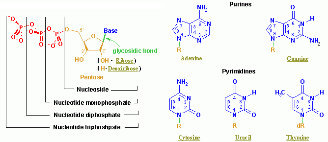

Al igual que con SCWRL es posible explorar los rotámeros de ciertas posiciones de una estructura proteica (ver 6.2), con el siguiente código, parte del algoritmo DNAPROT de Espinosa Angarica et al. (2008), podemos sustituir bases nitrogenadas a lo largo de una doble hélice de DNA en formato PDB, importando el módulo bases y descargando las coordenadas cristalográficas de la proteína dnaA (PDB 1J1V):
|

|
#!/usr/bin/env python
""" prog4.1 Toma un complejo proteina-DNA en formato PDB y sustituye la secuencia
de DNA. Genera un fichero PDB con el complejo resultante."""
__author__ = 'Bruno Contreras-Moreira with help from Vladimir Espinosa Angarica'
import bases
from math import sqrt
# 0) parametros del algoritmo:
complexfile = './files/1j1v.pdb';
secuencia_nueva = 'TGTTATCCCCGGG/CCTGTGGATAACA/'; # nativa TGTTATCCACAGG/CCTGTGGATAACA/
# 1) subrutinas
def lee_coordenadas_complejoPDB(filename):
""" Devuelve 2 listas de residuos de proteina y nucleotidos, cada uno con las
coordenadas de sus atomos, y una cadena de caracteres con la secuencia de DNA.
Ejemplo de linea en formato PDB:
ATOM 42 CA PHE X 3 6.981 22.274 18.887 1.00 6.72
ATOM 1 O5' DT B 101 19.688 25.517 6.033 1.00 43.07"""
pcoords,ncoords,sequence = [],[],''
pdbfile = open(filename,'r')
try:
res,prev_resID = '',''
for line in pdbfile:
if(line[0:3] == 'TER'):
prev_resID = 'TER'
continue
if(line[0:4] != 'ATOM'): continue
resID = line[17:26]
if(resID != prev_resID):
if(res != ''):
if(res[17:19] == " D"):
sequence += res[19:20]
if(prev_resID == 'TER'): sequence += '/'
ncoords.append(res)
else: pcoords.append(res)
res = line
else: res += line
prev_resID = resID
if(res != ''):
if(res[17:19] == ' D'):
sequence += res[19:20]
if(prev_resID == 'TER'): sequence += '/'
ncoords.append(res)
else: pcoords.append(res)
finally:
pdbfile.close()
return (pcoords,ncoords,sequence)
def mutagenesis(protein,dna,sequence,designed_sequence,PDBname):
"""Muta la secuencia original de las coordenadas en dna, sustituyendo
los nucleotidos que cambian en designed_sequence. Devuelve el numero
de sustituciones y genera un fichero PDB con el complejo mutado.
En las bases mutadas los atomos del esqueleto de DNA conservan el
nombre de la base original, para futura referencia."""
n_of_substitutions,totals,total_atm = 0,-1,0
designed_dna = []
for s in range(0,len(sequence)):
conserved = False
nt1 = sequence[s:s+1]
nt2 = designed_sequence[s:s+1]
if(nt1 == '/'): continue
totals += 1
if(nt1 == nt2): conserved = True
else: n_of_substitutions += 1
nt = ''
for atomo in dna[totals].split("\n"):
if(atomo == ''): break
if(atomo[15:16] == "'" or atomo[12:15] == ' P ' or atomo[12:15] == ' OP' \
or conserved):
nt += atomo + "\n"
if(conserved == False):
nt += base_mutada(dna[totals],nt2)
(renum_nt,total_atm) = renumera_atomos(nt,total_atm)
designed_dna.append(renum_nt)
pdbfile = open(PDBname, 'w')
print >> pdbfile, "HEADER redesigned protein-DNA complex\n",
print >> pdbfile, "REMARK original sequence : %s\n" % (sequence),
print >> pdbfile, "REMARK designed sequence : %s\n" % (designed_sequence),
for r in protein: print >> pdbfile, "%s" % (r),
print >> pdbfile, "TER\n",
for r in designed_dna: print >> pdbfile, "%s" % (r),
print >> pdbfile, "TER\n",
pdbfile.close()
return n_of_substitutions
def base_mutada(base_coords,sequence):
"""Devuelve cadena de caracteres con coordenadas de base nitrogenada de tipo 'sequence'
en el marco de referencia de 'base_coords', como en Kono H, Sarai A.1999 Protein,35(1):114-31.
"""
coords_string,mod = '',[0,0,0]
refmarco = [[],[],[]]
# recuerda numeracion de esta base y establece sistema de coordenadas en esta base
# N1/N9 son atomos equivalentes entre purinas y pirimidinas
basename = 'D'+sequence
chainID = base_coords[21:22]
resID = int(base_coords[22:26])
original_sequence = base_coords[19:20]
if(original_sequence == 'A' or original_sequence == 'G'):
refatom1 = extrae_coords_atomo(base_coords,' N9 ')
refatom2 = extrae_coords_atomo(base_coords,' C4 ')
refatom3 = extrae_coords_atomo(base_coords,' C8 ')
else:
refatom1 = extrae_coords_atomo(base_coords,' N1 ')
refatom2 = extrae_coords_atomo(base_coords,' C2 ')
refatom3 = extrae_coords_atomo(base_coords,' C6 ')
# X director unitario
refmarco[0].append(refatom2[0]-refatom1[0])
refmarco[0].append(refatom2[1]-refatom1[1])
refmarco[0].append(refatom2[2]-refatom1[2])
mod[0] = sqrt(refmarco[0][0]**2+refmarco[0][1]**2+refmarco[0][2]**2)
refmarco[0][0] /= mod[0]
refmarco[0][1] /= mod[0]
refmarco[0][2] /= mod[0]
# Z director en funcion de X (producto escalar de refmarco0 y vector 3-1)
refmarco[2].append( (refmarco[0][1]*(refatom3[2]-refatom1[2]))-(refmarco[0][2]*(refatom3[1]-refatom1[1])) )
refmarco[2].append( (refmarco[0][2]*(refatom3[0]-refatom1[0]))-(refmarco[0][0]*(refatom3[2]-refatom1[2])) )
refmarco[2].append( (refmarco[0][0]*(refatom3[1]-refatom1[1]))-(refmarco[0][1]*(refatom3[0]-refatom1[0])) )
mod[2] = sqrt(refmarco[2][0]**2+refmarco[2][1]**2+refmarco[2][2]**2)
refmarco[2][0] /= mod[2]
refmarco[2][1] /= mod[2]
refmarco[2][2] /= mod[2]
# Y director en funcion de X y Z (producto escalar de refmarco0 y refmarco2)
refmarco[1].append( (refmarco[0][2]*refmarco[2][1])-(refmarco[0][1]*refmarco[2][2]) )
refmarco[1].append( (refmarco[0][0]*refmarco[2][2])-(refmarco[0][2]*refmarco[2][0]) )
refmarco[1].append( (refmarco[0][1]*refmarco[2][0])-(refmarco[0][0]*refmarco[2][1]) )
mod[1] = sqrt(refmarco[1][0]**2+refmarco[1][1]**2+refmarco[1][2]**2)
refmarco[1][0] /= mod[1]
refmarco[1][1] /= mod[1]
refmarco[1][2] /= mod[1]
# calcula coordenadas de nueva base en este marco de referencia
newbase = bases.dna_base_coords(sequence)
for atomo in newbase.split("\n"):
if(atomo == ''): continue
refbasecoords = []
atcoords = extrae_coords_atomo(newbase,atomo[12:16])
refbasecoords.append( atcoords[0]*refmarco[0][0] + atcoords[1]*refmarco[1][0] + \
atcoords[2]*refmarco[2][0] + refatom1[0] )
refbasecoords.append( atcoords[0]*refmarco[0][1] + atcoords[1]*refmarco[1][1] + \
atcoords[2]*refmarco[2][1] + refatom1[1] )
refbasecoords.append( atcoords[0]*refmarco[0][2] + atcoords[1]*refmarco[1][2] + \
atcoords[2]*refmarco[2][2] + refatom1[2] )
coords_string += "%s %s %s%4d %8.3f%8.3f%8.3f 1.00 99.99\n" % \
(atomo[0:17],basename,chainID, resID,\
refbasecoords[0], refbasecoords[1],refbasecoords[2])
return coords_string
def extrae_coords_atomo(res,atomo_seleccion):
""" De todas las coordenadas atomicas de un residuo, extrae las de un atomo particular
y devuelve una lista con las X, Y y Z de ese atomo."""
atom_coords = []
for atomo in res.split("\n"):
if(atomo[12:16] == atomo_seleccion):
atom_coords = [ float(atomo[30:38]), float(atomo[38:46]), float(atomo[46:54]) ]
return atom_coords
def renumera_atomos(res,total_provisional):
""" Renumera los atomos de un residuo a partir de total_provisional y
devuelve una cadena de caracteres con el residuo renumerado y la cuenta
total actualizada."""
updated_total = total_provisional + 1
res_renum = ''
for atomo in res.split("\n"):
if(atomo == ''): continue
res_renum += "ATOM %4d %s\n" % (updated_total,atomo[12:])
updated_total += 1
return (res_renum,updated_total)
# 2) programa principal
print "# leyendo complejo %s ...\n" % (complexfile),
(protein,dna,secuencia) = lee_coordenadas_complejoPDB( complexfile )
print "# total aminoacidos: %d total nucleotidos: %d \n" % (len(protein),len(dna)),
print "# secuencia nativa : %s\n# secuencia deseada: %s\n" % (secuencia,secuencia_nueva),
sustituciones = mutagenesis(protein,dna,secuencia,secuencia_nueva,'complejo.pdb')
print "# archivo PDB = complejo.pdb con %d sustituciones\n" % sustituciones,
Para este tipo de manipulaciones moleculares de ácidos nucleicos es muy recomendable el software 3DNA, que puedes descargar o usar desde una interfaz web (Lu & Olson, 2008).